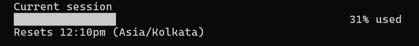
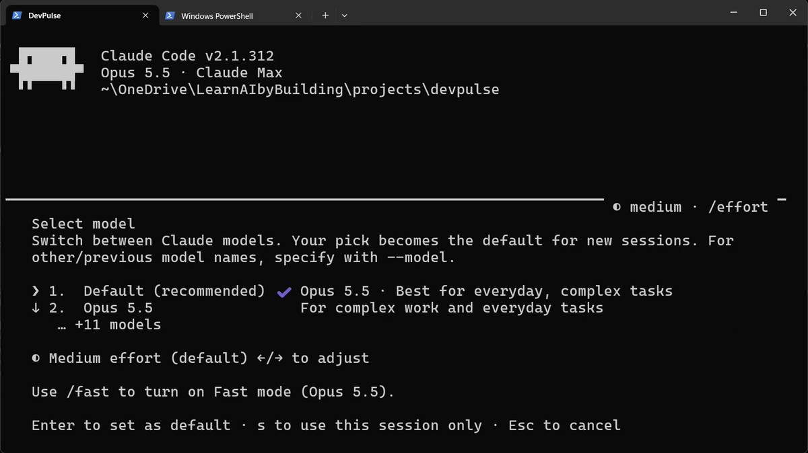
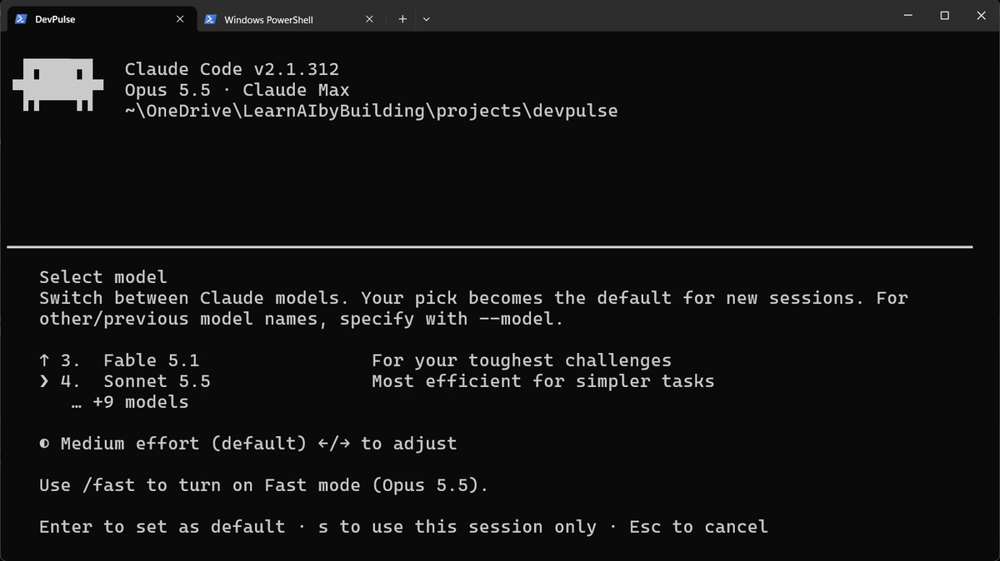
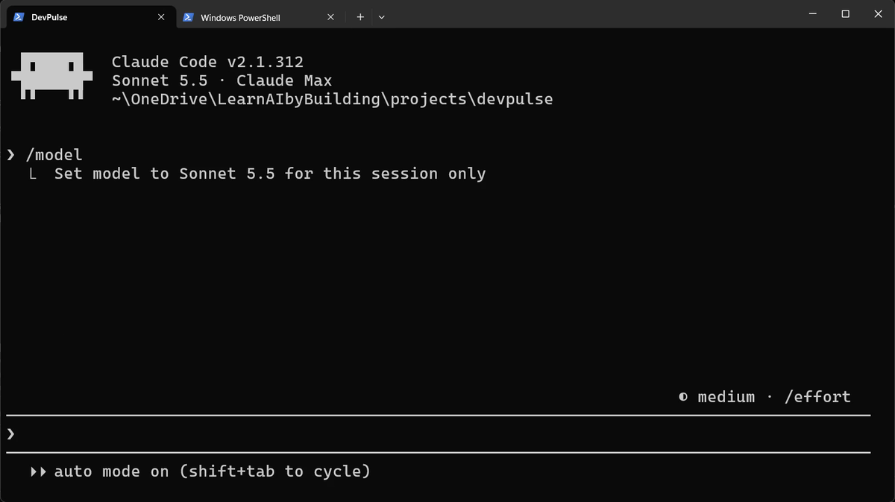
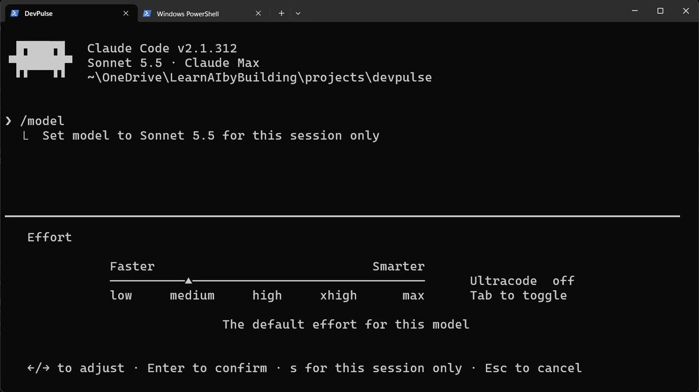
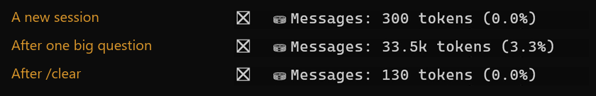
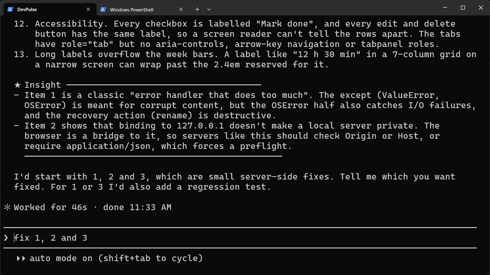
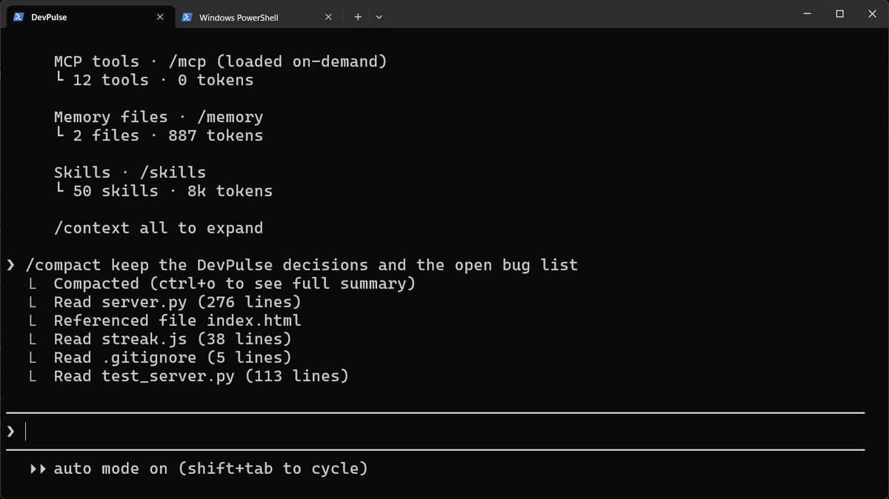
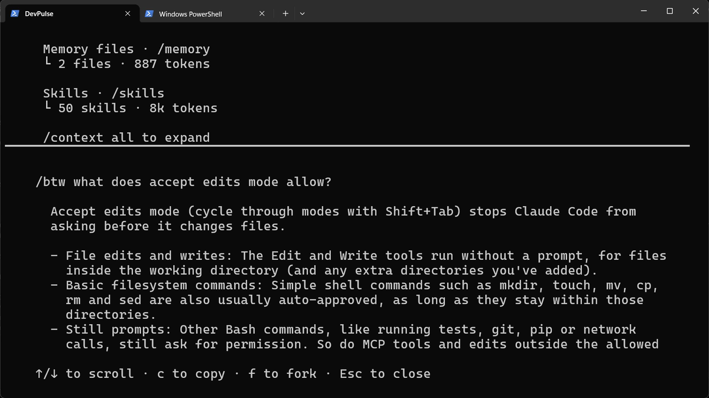

Where did my limit go?
Your plan gives you a limit for each few hours and for the week. A morning of chapters 1 to 5 uses a lot of it.
Say you fill a big car for a short trip to the shop. It works, but you pay for a big car every time. Claude Code has the same choices: which model, how hard it thinks, and how much it carries along.
How do you see what you used, and use less for the same work?
Read your usage
Start Claude Code and look at the first lines. They show the model. On Pro and above, the default is Opus: the strongest model, and the one that uses your limit fastest.

Pick a lighter model
Not every task needs the strongest model. A small change, a rename or a question about a file runs well on a lighter one.



Set how hard it thinks
A model can think briefly or at length. Longer thinking helps hard problems and costs more on easy ones.

Watch the conversation grow
Every message you send carries the whole conversation with it. So a long conversation costs more on each new question. /context shows the size; watch the Messages line.
We checked it three times: in a new session, after one big read-only question, and after /clear. This was the question:


Three ways to keep it short
There are three commands, one for each situation.
Still working on the same task? Shrink it, and say what must be kept.

A quick question off the main task? Ask it on the side. The answer is not added to the conversation.

Starting something unrelated? Start clean. /clear empties the conversation, in the same folder. Your files, CLAUDE.md and memory stay. The last line in the picture above, 130 tokens, is after /clear.
What saving costs
A lighter model can miss what Opus would catch. Low effort can rush a hard bug. And /compact keeps a summary, so details you did not name may be lost.
So switch down for easy work, and back up for hard work. And notice the prompts you type every day, again and again. That repetition costs time too. Chapter 7 turns one of them into a single command.
Quick reference
| Command or key | What it does | Use it when |
|---|---|---|
/usage | Shows how much of your plan's limit is used, and when it resets | You wonder why Claude slowed down or stopped |
/model | Picks the model; s = this session only, Enter = new default | The task is simple, or very hard |
/effort | Sets how hard the model thinks, low to max | Quick tasks need less thinking |
/context | Shows what fills the conversation; watch Messages | The conversation feels long |
/compact keep … | Shrinks the conversation to a summary of what you name | A long task still has more to do |
/btw question | Answers a side question without adding it to the conversation | A quick question off the main task |
/clear | Starts an empty conversation in the same folder | You switch to an unrelated task |
Measure one question
The goal: see what one question costs your conversation.
The steps: start claude, run /context and note the Messages line. Ask Explain streak.js in five lines. Run /context again.
Guess first: will Messages grow by hundreds, or by thousands?
One question for you: which of your tasks today really needed the strongest model?
References
Where each command on this page comes from. Every screenshot is from our own recording on 29 Oct 2026, Claude Code 2.1.312.
- Anthropic · Manage costs effectively What uses your plan: model, effort, the size of the conversation; /compact and /clear. https://code.claude.com/docs/en/costs
- Anthropic · Model configuration /model, the default model per plan, and choosing a model for one session. https://code.claude.com/docs/en/model-config
- Anthropic · Interactive mode /usage, /effort, /context, /compact, /btw and /clear. https://code.claude.com/docs/en/interactive-mode
- My own recording · 29 Oct 2026, Windows 11 One read-only question grew the conversation from 300 to 33,500 tokens.